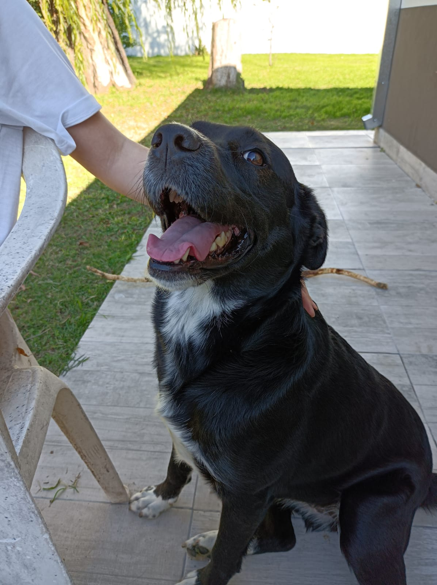
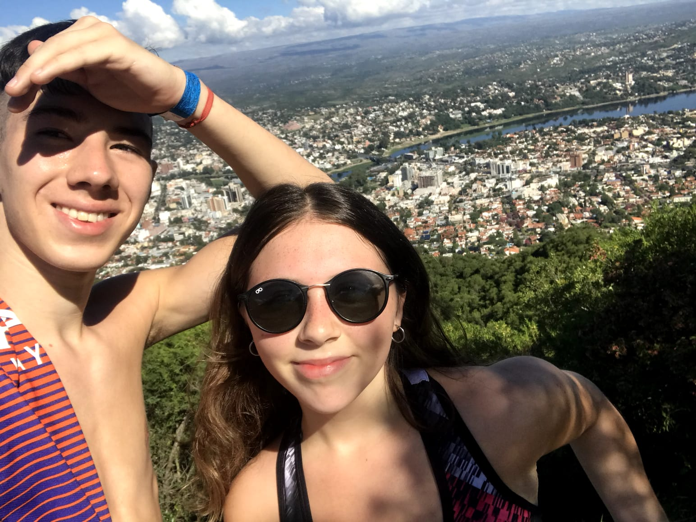
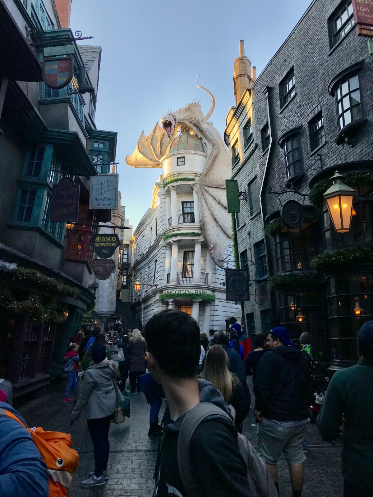
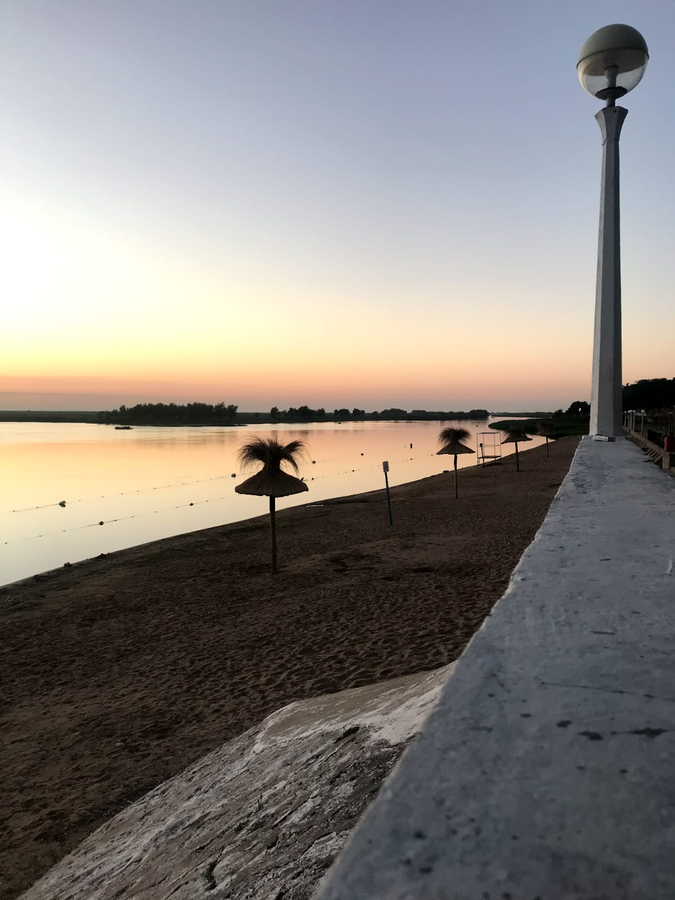

Kira
Ella es Kira y se merecía una presentación en esta página. Es mi primer mascota, ya hace 2 años esta junto a nosotros y esta fue su cara cuando se enteró que iba de viaje con la familia

Ale y Lui
Este fue el primer viaje que realice con mi novia, Luisi. En esta ocasion fuimos a Carlos Paz y la foto es en el Cerro la cruz

Universal Studios
Esta foto es muy significativa para mi ya que estoy en un iconico lugar de Harry Potter "Gringots Bank", pelicula de la cual todos somos seguidores en casa.

Mi ciudad
Esto es Coronda, mi ciudad de nacimiento y donde vivo actualmente, precisamente esta hermosa foto es de un amanecer en la famosa "Costanera Corondina"